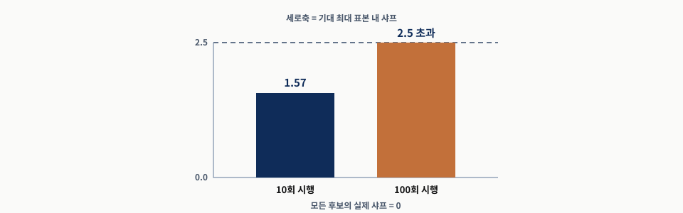
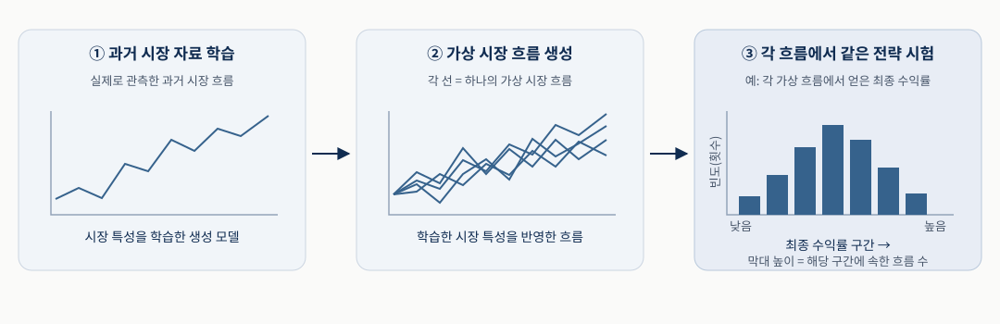
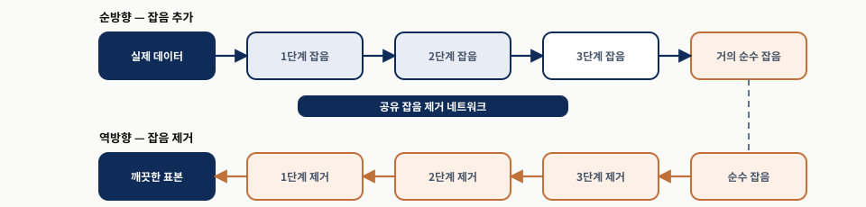
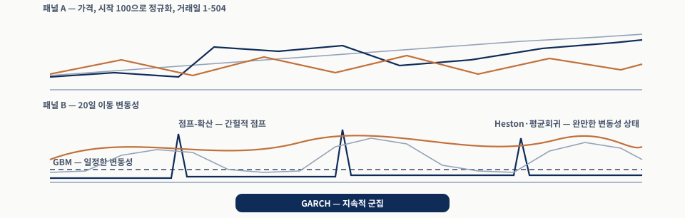
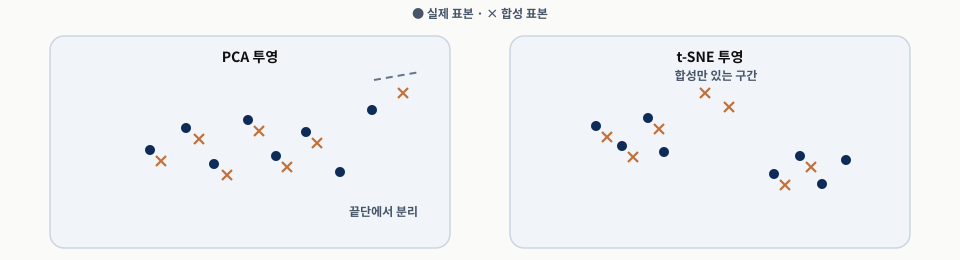
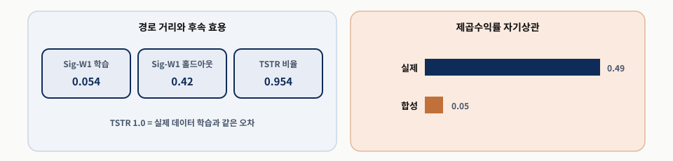
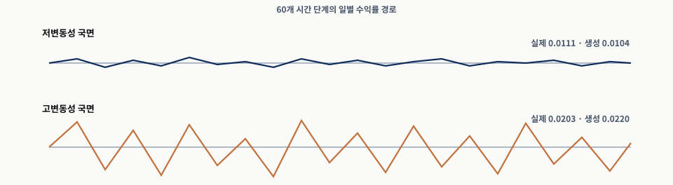
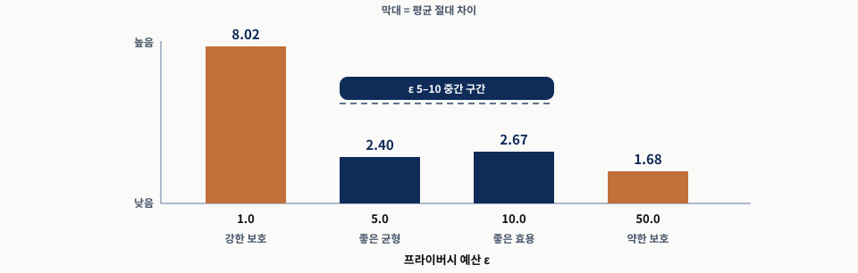
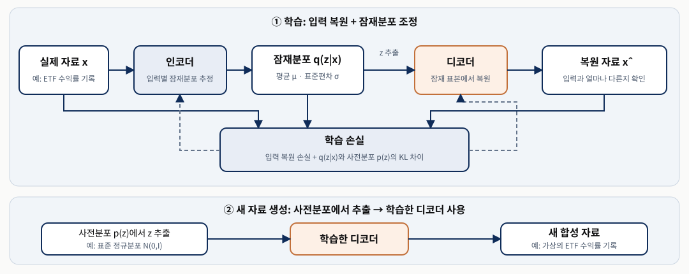

하나의 과거 시장 기록만으로 전략을 얼마나 믿을 수 있을까요? 여러 가상 시장 경로에서 전략을 시험하고, 합성 데이터의 품질을 검증하기
발표자
태호
범위
Chapter 5
일시
2026-10-17
AIML QuantSUMMARY
합성 데이터의 역할·평가 기준·한계
출발점: 과거의 좋은 성과만으로는 다른 시장 상황에서도 성과를 유지할지 판단하기 어려움
01
역할: 전략 검증 범위 확대
관측 자료를 바탕으로 다양한 가상 시장 흐름 생성
급락 시점·변동성·동반 하락 변화에 대한 전략의 강건성 평가
02
평가: 목적에 맞는 품질 확인
충실도: 실제 시장의 주요 특성 재현 여부
효용: 전략 평가·예측·위험 측정에 대한 도움 여부
프라이버시: 비공개 자료 활용 시 민감정보 노출 여부
03
한계: 실제 검증의 대체 불가
학습 자료에 없는 위기를 재현했다는 보장 부재
최종 평가: 생성기 학습·전략 선택에 사용하지 않은 실제 데이터
다양한 가상 시장 흐름으로 검증 범위 확대 → 학습·전략 선택에 쓰지 않은 실제 데이터로 최종 평가
AIML QuantSTORY
이번 챕터 흐름
과거 데이터 기반 검증의 한계 확인 → 다양한 가상 시장 흐름의 생성·평가 → 학습·전략 선택에 쓰지 않은 실제 데이터로 최종 평가
① 과거 데이터 기반 검증의 한계
하나의 과거 기록에 의존한 검증 · 여러 전략 중 좋은 결과만 선택할 위험
② 합성 데이터를 활용한 전략 검증
시장 흐름 변화에 따른 수익·손실 분포 확인
③ 합성 데이터의 평가 기준
충실도·효용 검증 · 비공개 자료 활용 시 프라이버시 검증
④ 생성 방법 비교
과거 자료 재조합·통계 모형부터 GAN·확산 모델·LLM까지
⑤ 사용 목적별 실험 결과 해석
예측 성능이 좋아도 급락 위험·전략 평가에 적합한지는 별도 확인
⑥ 실제 데이터로 최종 평가
학습·전략 선택에 쓰지 않은 실제 데이터에서 성과 확인
과거의 좋은 성과 ≠ 다른 시장 상황에서의 성과 보장
PART 01 · 문제 · §5.1
① 과거 데이터 기반 검증의 한계
과거 기록의 한계 → 반복 선택에 따른 성과 과대평가 → 통계적 보정(DSR) → 보정 후에도 남는 검증 한계 → 다양한 시장 흐름에서 추가 검증
01AIML Quant① 과거 데이터 기반 검증의 한계
과거 시장 기록에 의존하는 전략 검증
교재 §5.1
CONSTRAINT
검증 자료의 한계
규칙 기반·머신러닝 전략 모두 관측된 과거 기록에서 개발·검증
위기·시장 상황 변화·자산 간 상관관계 붕괴 사례가 적을수록 검증 근거도 제한적
RISK
좋은 과거 성과의 해석
지속적으로 유효한 규칙보다 특정 사건의 영향으로 좋은 성과를 냈을 가능성
시장 상황이 바뀐 시점에 우연히 유리했는지 추가 확인 필요
교재 예시 · §5.1 — 급락 직전에 우연히 매도한 전략 → 매도 신호가 며칠 늦었다면 큰 손실 가능
한 번의 위기 회피만으로는 다른 시장 상황에서의 성과 유지 여부 판단 곤란
AIML Quant① 과거 데이터 기반 검증의 한계
반복 시험과 최고 성과 선택에 따른 과대평가 위험
같은 과거 데이터에서 여러 조합 시험 → 가장 좋은 결과 선택 → 우연히 높게 나온 성과를 선택할 가능성 증가
CHOICES
전략 개발 과정의 반복 선택
투자 종목·매매 신호·모델 입력 변수 선택
예측 대상 기간·학습 모델·모델 설정값 조정
검증 방식·위험 관리·거래 실행 조건·투자 비중 결정
CONSEQUENCE
시험한 조합이 많아질수록 커지는 위험
시험한 조합의 범위 확대 → 우연히 높은 성과를 낸 조합의 발견 가능성 증가
다른 시장에서도 유효한 전략보다 해당 과거 데이터에만 잘 맞는 전략을 선택할 위험
교재 예시 · §5.1 — 매수 기준·보유일·거래 종목을 바꿔 가며 같은 과거 기록을 반복 시험 → 가장 잘된 조합만 선택
최고 성과만으로 판단 곤란 → 시험한 조합의 수와 선택 과정도 함께 고려
AIML Quant① 과거 데이터 기반 검증의 한계
여러 전략·설정 조합 중 최고 성과만 선택할 때의 과대평가 위험
교재 수치 예시 · §5.1

그림 1 · 시험한 전략·설정 조합 수와 최고 백테스트 샤프 비율의 기대값
조건: 모든 전략의 실제 샤프 비율 0 · 독립성·정규오차 가정 근사
시험 대상: 서로 다른 전략·설정 조합
시험한 조합이 많으면 최고 성과도 높아 보이는 이유
교재 내용 해설 · §5.1
모든 전략의 실제 샤프 비율: 0
과거 데이터에서 관측되는 샤프 비율: 우연한 변동으로 차이 발생
10개 조합 시험: 그중 최고값 선택
100개 조합 시험: 우연히 더 높은 값을 발견할 기회 증가
1.57·2.5 초과: 각 조건에서 선택될 최고값의 평균적 예상 수준 · 매번 보장되는 값은 아님
높은 백테스트 성과만으로 전략의 우수성 판단 곤란 → 시험한 조합의 수와 선택 과정도 함께 고려
별도 참고 · 교재의 Bailey et al. (2015): 백테스트 과적합 확률 50% 초과 가능 · 위 그래프에서 직접 계산한 확률은 아님
AIML Quant① 과거 데이터 기반 검증의 한계
전략 선택 과정을 고려한 성과 평가
교재 §5.1
PROCESS
최종 성과와 함께 확인할 선택 과정
보고된 성과: 여러 전략·설정 조합 중 선택된 결과
성과 평가 시 시험한 조합과 수정 과정도 함께 고려
백테스트 결과를 해석할 때 선택 과정에 따른 과대평가 가능성 확인
CORRECTION
통계적 보정의 역할과 한계
디플레이티드 샤프 비율(Deflated Sharpe Ratio)
수익률의 비정규성·시험 횟수를 고려한 통계적 평가
비정규성: 수익률 분포가 정규분포를 따르지 않는 특성
선택에 따른 성과 과대평가를 고려하되, 다른 시장 상황에서의 검증 자료를 추가하지는 못함
Bailey and Lopez de Prado (2014) · 상세 내용: 17장
설명용 예시 — 샤프 비율 2.0인 전략 발견 → 그 결과를 얻기까지 시험한 조합의 수와 선택 과정도 함께 확인
좋은 성과의 발견 과정까지 평가 → 다른 시장 상황에서의 성과 유지 여부는 별도 검증
AIML Quant① 과거 데이터 기반 검증의 한계
통계적 보정 후에도 남는 검증의 한계
성과 과대평가를 고려하는 것과 다른 시장 상황에서 전략을 시험하는 것은 별개의 과제
01
통계적 보정으로 가능한 것
시험 횟수·수익률 분포의 특성을 고려한 성과 평가
여러 조합 중 좋은 결과를 선택한 데 따른 과대평가 가능성 반영
02
여전히 남는 질문
급락 시점이나 큰 등락의 순서가 달라도 전략의 성과 유지 가능 여부
통계적 보정만으로는 다른 시장 흐름에서의 성과 확인 불가
03
다음 단계: 합성 데이터 활용
관측 자료에서 학습한 시장 특성을 바탕으로 다양한 가상 시장 흐름 생성
생성한 시장 흐름에서 전략의 성과 유지 여부 추가 시험
성과 평가의 통계적 보정 → 다양한 가상 시장 흐름에서의 추가 검증 필요
핵심 질문: 급락 시점이나 시장 흐름이 달라도 전략이 성과를 유지할 수 있는가?
PART 02 · 대안 · 장 도입·§5.1
② 합성 데이터를 활용한 전략 검증
주제 전환: ① 과거 데이터 기반 검증의 한계 → ② 합성 데이터를 활용한 전략 검증
섹션 흐름: 생성·평가 과정 → 용어 구분 → 시장 특성 재현 조건 → 활용 → 과적합 위험과 실제 자료 검증
02AIML Quant② 합성 데이터를 활용한 전략 검증
과거 자료 학습 → 가상 시장 흐름 생성 → 전략 성과 분포 확인

그림 2교재 내용 기반 설명용 개념도 · 실제 실험 결과 아님읽는 법 — 왼쪽: 과거 시장 자료 학습 · 가운데: 가상 시장 흐름 생성 · 오른쪽: 각 흐름에서 같은 전략을 시험한 성과 분포해석 경계 — 생성한 흐름의 시장 특성 재현 여부 검증 필요 · 최종 평가는 생성기 학습·전략 선택에 쓰지 않은 실제 데이터에서 수행
AIML Quant② 합성 데이터를 활용한 전략 검증
가상 금융 데이터를 설명하는 세 가지 용어
생성 방식과 조건에 따른 관련 용어 · 하나의 데이터에 여러 용어 적용 가능
표 1 합성 데이터·시뮬레이션 데이터·생성 시나리오의 구분
이름
만드는 방식
설명용 예시
합성 데이터(synthetic data)
관측 자료의 분포와 변수 간 관계를 학습한 모델로 생성 · 개별 변수의 특성과 시간·자산·시장 상황에 따른 관계 재현 목표
실제 수익률의 등락 특성과 자산 간 동반 움직임을 학습해 새 기록 생성
시뮬레이션 데이터(simulated data)
일반적으로 가정한 확률 모형에서 난수를 반복 추출해 생성(몬테카를로 시뮬레이션)
가격 변화 모형의 규칙에 무작위 변동을 넣어 여러 시장 흐름 생성
생성 시나리오(generated scenarios)
특정 시장 상황이나 상태를 조건으로 지정해 생성
‘변동성이 높은 시장’ 조건을 지정해 시장 흐름 생성
공통 목적: 관측한 과거 기록을 가상 자료로 보완 → 다양한 시장 상황에서 전략의 성과 유지 여부 평가
AIML Quant② 합성 데이터를 활용한 전략 검증
전략 검증의 목적: 다양한 시장 상황에서의 성과 유지 여부 확인
실제 시장의 주요 특성을 재현한 가상 흐름에서 전략 성과의 분포 확인
ROBUSTNESS
다양한 흐름에서 전략 시험
같은 전략을 여러 가상 시장 흐름에 적용
수익 수준과 큰 손실의 빈도·크기를 함께 확인
생성 모델의 가정과 편향에 따라 평가 결과도 달라질 가능성
최종 평가: 생성기 학습·전략 선택에 쓰지 않은 실제 데이터 사용
MARKET CHARACTERISTICS
시장 특성의 재현 여부 확인
큰 등락의 발생 빈도
자산 간 동반 상승·하락
큰 변동이 이어지는 현상
시장 상황 변화에 따른 움직임의 차이
설명용 예시 — 실제로는 두 ETF가 함께 급락하지만 가상 자료에서는 번갈아 하락 → 분산투자 효과 과대평가·손실 위험 과소평가 가능
시장 특성을 놓친 가상 자료 → 전략 성과와 위험에 대한 잘못된 판단 가능
AIML Quant② 합성 데이터를 활용한 전략 검증
가상 시장 흐름이 재현해야 할 금융 수익률의 주요 특성
실제 금융 수익률에서 반복적으로 관찰되는 특성 — 정형화된 사실
표 2 교재 §5.1에서 제시한 금융 수익률의 주요 특성
특성
쉬운 설명
두꺼운 꼬리(heavy tails)
정규분포로 예상하는 것보다 큰 상승·하락이 자주 발생
변동성 군집(volatility clustering)
크게 오르내리는 날들이 연이어 나타나는 경향
레버리지 효과(leverage effect)
특히 주식시장에서 하락 이후 변동성이 높아지는 경향
약한 수익률 자기상관(weak return autocorrelation)
일별 수익률 사이의 선형 관계가 대체로 약함 · 오늘 수익률만으로 내일 수익률 설명에 한계
설명용 예시 — ETF 실제 수익률로 생성 모델 학습 → 가상 자료에서도 큰 손실의 빈도·큰 등락의 지속 여부 확인
큰 등락의 발생 빈도와 지속성은 별개 특성 → 각각 검증 · 자산 간 관계도 추가 확인
AIML Quant② 합성 데이터를 활용한 전략 검증
합성 데이터의 세 가지 활용
매매 조건 비교 · 불리한 시장에서 손실 점검 · 원본 자료 공유가 어려운 경우의 개발·협업
01
매매 조건 비교
여러 가상 시장에서 매매 조건별 성과·위험 비교
다양한 시장 상황에서 성과를 유지하는 조건 탐색
설명용 예시: 투자 비중을 매주 조정할 때와 매달 조정할 때 비교
02
불리한 시장에서 손실 점검
관측한 변동성과 자산 간 관계를 반영한 가상 시장 생성
큰 하락 시 손실 규모·자산 간 관계 변화·위험 관리의 작동 여부 확인
설명용 예시: 여러 자산이 함께 하락할 때 손실 제한 규칙 점검
03
원본 공유가 어려운 경우의 개발·협업
비공개 거래 자료의 특성을 반영한 합성 자료로 개발 지원
설명용 예시: 고객 주문 원본을 공유하기 어려울 때 합성 주문 자료 활용
필수 조건: 원본의 민감정보 노출 위험을 별도로 평가(교재 §5.8)
사용 목적에 맞는 자료인지 확인 · 비공개 자료는 민감정보 보호 여부도 별도 검증
AIML Quant② 합성 데이터를 활용한 전략 검증
합성 자료로 전략을 반복 수정할 때의 과적합 위험
기본 목적: 같은 전략을 다양한 가상 시장 흐름에서 추가 검증 · 단, 결과를 보고 전략을 반복 수정하면 과적합 위험
CONDITIONAL RISK
결과를 보고 전략을 수정한다면
생성 모델: 실제 자료의 특성을 학습해 합성 데이터를 만드는 모델
이 모델이 만든 합성 자료에 맞춰 전략·설정을 반복 수정 → 모델 특성에만 유리한 전략을 선택할 위험
합성 자료에서의 좋은 성과가 실제 시장에서도 유지된다는 보장 부재
VALIDATION
검증 대상과 실제 자료의 구분
생성 모델 검증: 생성 모델 학습에 사용하지 않은 실제 자료와 합성 자료의 시장 특성 비교
전략 최종 평가: 전략 수정·선택에 사용하지 않은 실제 자료에서 성과 확인 · 전략을 수정하지 않았어도 필요
수정·선택에 활용했다면: 선택 과정과 분리된 외부 검증 단계에서 최종 평가
가능하면 전략 선택 전에 생성 모델 고정
설명용 예시 — 가상 시장에서 손실이 컸다는 이유로 손절 기준 반복 수정 → 해당 생성 모델에만 잘 맞는 규칙을 선택할 가능성
생성 모델의 시장 특성 재현 여부와 전략의 실제 성과는 별개 → 각각 검증 필요
핵심 질문: 생성한 합성 데이터의 품질을 어떻게 평가할까?
PART 03 · 평가 기준 · §5.2
③ 합성 데이터의 평가 기준
주제 전환: ② 합성 데이터를 활용한 전략 검증 → ③ 합성 데이터 자체의 품질 평가
섹션 흐름: 세 평가 기준과 개별 평가의 필요성 → 기준별 검사 방법 → 추가 위험 점검 → 충실도·효용·프라이버시 검사 결과와 실제 자료의 검증 결과 정리
03AIML Quant③ 합성 데이터의 평가 기준
합성 데이터의 세 가지 평가 기준
그림 3교재 내용 기반 개념도 · 세 기준별 핵심 질문읽는 법 — 충실도: 실제 자료의 특성 재현 · 효용: 사용 목적에 대한 도움 · 프라이버시: 민감정보·학습 기록의 노출 위험해석 경계 — 실제와 비슷해 보여도 유용성·정보 보호가 보장되지는 않음 → 세 기준을 각각 평가
AIML Quant③ 합성 데이터의 평가 기준
세 평가 기준을 각각 확인해야 하는 이유
충실도·효용·프라이버시: 서로 다른 질문 · 한 기준의 좋은 결과가 다른 기준까지 보장하지는 않음
01
충실도가 높아도 효용은 별도 확인
실제와 분포가 비슷해도 특정 과제에 필요한 정보를 놓칠 가능성
예측·전략 평가·위험 측정 등 사용 목적에 맞는 성능 검사 필요
한 용도의 좋은 결과가 다른 용도의 적합성까지 보장하지는 않음
02
충실도·효용이 좋아도 보호는 별개
실제와 비슷하고 유용한 자료라도 원본의 민감정보가 드러날 위험
비공개·민감 자료는 원본 기록의 복사·암기·정보 노출을 별도로 검사
03
보호 강화가 품질에 미치는 영향도 확인
프라이버시 보호를 강화하면 실제 자료의 분포·관계 재현 수준이 낮아질 가능성
보호 수준을 높인 뒤에도 사용 목적에 도움이 되는지 재평가
충실도·효용·프라이버시는 서로 대신할 수 없음 → 각 기준의 근거를 따로 확인
AIML Quant③ 합성 데이터의 평가 기준
충실도: 실제 자료의 값·관계·시간에 따른 움직임 재현
변수: 분석에 사용하는 각 항목 · 예: ETF 수익률, 거래량 · 교재 §5.2
01
각 항목의 값과 분포
각 항목의 값이 어느 범위에 얼마나 자주 나타나는지 비교
설명용 예시: ETF A의 −5% 같은 큰 손실이 발생하는 빈도 비교
KS 통계량·Wasserstein 거리: 분포 차이 측정
히스토그램·누적분포·QQ 플롯으로 시각적 확인
표 3 설명용 예시 · 5일 수익률 · 평균은 모두 0%
자료
시간순 수익률
실제
−4%, −1%, 0%, +1%, +4%
합성
0%, 0%, 0%, 0%, 0%
02
항목 사이의 관계
각 항목을 따로 볼 때뿐 아니라 함께 움직이는 관계도 확인
설명용 예시: ETF A가 하락한 날 ETF B도 함께 하락하는지 확인
상관·공분산행렬 등으로 자산 간 관계 비교
업종·시장 상황별 관계 변화도 점검
표 4 설명용 예시 · 같은 개별 분포, 다른 동반 움직임
날짜
실제 A / B
합성 A / B
1일
−3% / −3%
−3% / +3%
2일
0% / 0%
0% / 0%
3일
+3% / +3%
+3% / −3%
03
시간에 따른 움직임
등락 폭이 시간에 따라 이어지는 방식 확인
설명용 예시: 오늘 등락 폭이 크면 다음 날도 큰 움직임이 이어지는지 확인
일별·분별 등 실제 사용 간격에 맞춰 검사
자기상관 등의 세부 진단: 다음 페이지
표 5 설명용 예시 · 하루 등락 폭: 작음·큼 각 3번
자료
시간순 움직임
실제
작음 → 작음 → 작음 → 큼 → 큼 → 큼
합성
작음 → 큼 → 작음 → 큼 → 작음 → 큼
각 항목의 분포·항목 사이의 관계·시간에 따른 움직임은 별개 → 각각 확인
AIML Quant③ 합성 데이터의 평가 기준
시간적 특성 검사: 수익률과 등락 폭의 자기상관 비교
앞 페이지의 ‘시간에 따른 움직임’ → 자기상관 함수로 검사 구체화 자기상관 함수(ACF): 일정한 시간 간격을 둔 값 사이의 선형 관계 측정 · 교재 §5.2
수익률 자체의 자기상관
오늘 수익률과 하루·이틀 뒤 수익률 사이의 선형 관계
일별 금융 수익률에서는 대체로 약함
선형 관계가 약하다고 모든 예측 가능성이 없다는 뜻은 아님
제곱·절대수익률의 자기상관
상승·하락 방향보다 등락 폭의 크기에 주목
큰 움직임 뒤에도 큰 움직임이 이어지는지 확인
시간 간격이 늘어도 양의 자기상관이 천천히 줄면 변동성 지속의 단서
설명용 예시 — +5%와 −5% → 절대수익률은 모두 5%, 제곱수익률도 동일 → 방향은 달라도 움직임의 크기는 같게 취급
ACF만으로 진단 완료 불가 → 큰 손실·하락 이후 변동성·자산 간 관계도 함께 확인
AIML Quant③ 합성 데이터의 평가 기준
효용: 합성 데이터가 사용 목적에 도움이 되는가?
충실도: 실제 자료의 재현 여부 → 효용: 사용 목적에 대한 도움 여부 활용 전환: 기존 전략을 가상 시장에서 시험 → 여기서는 합성 자료로 예측·분류 모델을 학습하고 실제 자료에서 평가
실제와 비슷해도 도움이 안 될 수 있음
전체 분포가 비슷해도 특정 과제의 예측·판단에 필요한 정보를 놓칠 가능성
충실도가 높다는 이유만으로 효용까지 보장 불가
예측·분류·위험 측정·전략 평가 등 사용 목적에 맞는 지표로 별도 평가
학습 자료만 바꿔 같은 실제 자료에서 비교
여기서 TSTR은 예측·분류 모델 학습용 합성 자료의 효용 검사 기존 매매 전략을 합성 시장에서 실행하는 절차와 구분
표 6 TSTR: Train on Synthetic, Test on Real TRTR: Train on Real, Test on Real
방식
학습 자료
시험 자료
TSTR
합성 자료
학습에 쓰지 않은 실제 자료
TRTR
실제 자료
TSTR과 동일한 실제 시험 자료
모델 종류·입력 변수·예측 목표·평가 기간을 동일하게 유지
실제 시험 자료는 생성 모델의 학습에도 사용하지 않기
설명용 예시 — 합성 자료로 급락 경보 모델 학습 → 새 실제 기간의 급락 탐지 성능을 실제 자료로 학습한 모델과 비교
효용은 사용 목적별 평가 → 예측 모델 학습은 TSTR로, 기존 전략의 추가 검증은 수익·손실·최대 낙폭 등으로 확인
AIML Quant③ 합성 데이터의 평가 기준
합성 자료 학습 모델과 실제 자료 학습 모델의 예측 오차 비교
효용 평가의 한 사례: 예측 모델 학습용 합성 데이터의 가치를 TSTR 오차 비율로 확인 앞 페이지의 TSTR·TRTR 비교 → 두 모델의 실제 시험 오차를 비율로 요약
인코더가 입력 특징을 잠재공간의 정규분포로 표현 → 평균 μ·표준편차 σ 출력 학습 시 해당 분포에서 표본을 뽑아 복원 · 새 자료 생성 시 사전분포에서 뽑아 디코더에 입력
비교적 안정적인 학습 · 숫자·범주 등이 섞인 표의 기준 모델 큰 등락·드문 유형을 약하게 표현할 가능성
GAN 생성적 적대 신경망
자료를 만드는 모델과 실제·가짜를 구분하는 모델의 경쟁으로 학습
복잡한 관계 표현 가능 학습 불안정·일부 상황만 반복 생성할 위험
확산 모델 Diffusion model
잡음에서 자료를 복원하는 규칙 학습 · 잡음을 반복 제거해 새 자료 생성
대체로 안정적인 학습 · 특정 시장 상황을 지정한 생성 지원 반복 단계에 따른 생성 시간 증가
LLM 기반 표 생성
표의 열 이름과 값을 텍스트로 학습 · 앞선 텍스트에 이어 다음 내용을 생성해 새 행 구성
숫자·범주·문자가 섞인 표와 조건을 지정한 생성에 활용 잘못된 값·열 누락·원본 정보 노출 검사 필요
공통 평가 기준은 같지만 실패 방식은 다름 → 자료 유형과 사용 목적에 맞춰 선택
용어: 잠재 표현 = 자료를 압축해 나타낸 내부 표현 · VAE 설명은 정규 잠재분포를 사용하는 표준 구조 기준 · 조건을 지정한 생성 = 원하는 시장 상황·항목 값을 지정해 자료 생성
AIML Quant④ 목적에 맞는 생성 방법 비교
사용 목적에 맞는 생성 모델 선택 기준
36페이지의 네 생성 계열 비교 → 사용 목적에 맞는 선택 기준 정리 · 교재 §5.4
MODEL FIT
학습 목표와 재현 대상의 일치
GAN: 시간적 흐름·큰 손실 등 재현 목표에 맞는 학습 방식 선택
확산 모델: 대체로 안정적인 학습·조건을 지정한 생성 · 반복 단계로 생성 속도 저하
LLM 기반 표 생성: 숫자·범주·문자가 섞인 표 처리 · 열 구성·값의 유효성과 원본 정보 노출 검사
SELECTION
세 가지 선택 질문
필요한 움직임 재현: 급락·동반 하락 등 사용 목적에 중요한 구조의 보존 여부
고전적 방법과 비교: 부트스트랩·모수적 모델 대비 품질·계산 비용
민감한 자료의 보호: 비공개 자료 사용 시 프라이버시 제약 충족 여부
설명용 예시 — 위험 평가: 큰 손실의 발생 빈도·규모 재현 / 비공개 고객 자료 생성: 잘못된 기록·원본 정보 노출 검사
사용 목적에 필요한 구조 재현 → 고전적 방법과 비교 → 해당하는 프라이버시 제약 확인
다양한 가상 시장 흐름 생성 가능 · 모델의 학습 방식에 따른 왜곡 가능 → §5.2의 평가 기준 적용 다음: 시간적 흐름·큰 손실 등 재현 목표에 따라 학습 방식을 달리한 GAN 변형 비교
PART 04 · 생성 방법 비교 · 교재 §5.5
주제 전환: 생성 모델의 선택 기준 정리 → 금융 시계열용 GAN의 생성 방식 비교
④ 목적에 맞는 합성 데이터 생성 방법 비교
금융 시계열을 위한 GAN 변형
핵심 질문: 시간적 흐름·큰 손실·불규칙한 관측 간격의 재현을 위한 GAN 설계 방법
내용 흐름: GAN의 기본 학습 원리 → 재현 목표별 네 가지 변형 → 실험 결과와 검증 시 주의점
04AIML Quant④ 목적에 맞는 생성 방법 비교
GAN의 기본 원리: 생성기와 판별기의 교대 학습
실제·합성을 구별하는 판별기 ↔ 실제와 구별하기 어려운 데이터를 만드는 생성기 · 교재 §5.5
ROLES
두 신경망의 역할
생성기: 무작위 잡음 입력 → 합성 데이터 생성
판별기: 실제·합성 데이터를 입력받아 실제인지 합성인지 구별
생성기의 학습 목표: 판별기가 실제와 구별하기 어려운 데이터 생성
TRAINING
번갈아 진행하는 학습
① 판별기 학습: 생성기는 고정 · 실제와 합성을 더 잘 구별하도록 조정
② 생성기 학습: 판별기는 고정 · 판별기의 판단 결과를 이용해 생성기 조정
①·② 반복 → 판별기의 구별 능력과 생성기의 데이터 생성 능력 개선을 목표로 학습
설명용 예시 — 가상 ETF 수익률 생성 → 실제 수익률과 함께 판별기에 입력 → 판별 결과를 이용해 실제와 구별하기 어려운 수익률을 생성하도록 학습
실제 데이터의 확률분포를 수식으로 직접 명시하기 어려워도 판별 결과를 이용한 생성기 학습 가능
다음: 실제와 구별하기 어렵다는 결과만으로 시간적 흐름·큰 손실의 재현을 보장하기 어려움 → 이를 보완하는 네 가지 GAN 변형 비교
AIML Quant④ 목적에 맞는 생성 방법 비교
재현 목표에 따른 금융 시계열용 GAN 변형 비교
기본 GAN의 학습 원리 → 금융 데이터에서 재현하려는 구조에 맞춰 학습 목표·모델 구조 조정 · 교재 §5.5
01
TimeGAN
이름의 의미: 시간 순서가 있는 시계열(Time series) 생성
핵심 방법: 압축된 표현에서 다음 상태를 예측하는 학습 추가 → 시간적 관계 재현
설명용 예시 일별 가격: 100 → 102 → 101 값과 앞뒤 관계 함께 재현
02
Tail-GAN
이름의 의미: 분포의 꼬리(Tail)에 해당하는 극단적 위험 재현
핵심 방법: 실제·합성 데이터의 VaR·ES 차이를 줄이도록 학습
설명용 예시 작은 등락: −1%, +0.5%, +1% 드문 큰 하락: −10%, −15%
03
Sig-CWGAN
재현 목표: 시장 흐름의 변화 순서·자산 간 상호작용
핵심 방법: 흐름을 요약한 ‘경로 시그니처’로 실제·합성의 차이 비교
학습하는 판별기를 시그니처 기반 비교 기준으로 대체
04
GT-GAN
재현 목표: 불규칙한 관측 간격을 가진 시계열
핵심 방법: 신경망으로 시간에 따른 변화를 나타내는 연속시간 모형 사용
판별기에서 관측값과 관측 시점을 함께 평가
비교 핵심 — 기본 GAN에서 부족할 수 있는 재현 능력 보완 · 네 변형의 목표는 서로 다름
사용 목적에 맞는 재현 목표로 모델 선택 → 실제 재현 여부는 별도로 평가
용어: VaR (Value-at-Risk): 정한 확률 수준의 손실 기준값 · ES (Expected Shortfall): 그 기준을 넘는 손실의 평균 다음: 네 변형의 실험 결과와 한계 확인 · 상세한 구조·학습 방법은 부록 참고
AIML Quant④ 목적에 맞는 생성 방법 비교
GAN 변형의 실험 결과: 좋은 지표 하나만으로 충분한가?
40페이지의 재현 목표 → 교재 실험에서 달성한 부분과 남은 한계 확인 · 교재 §5.5
표 12 교재 §5.5 구현 실험 결과 · 데이터·과제·지표가 달라 수치만으로 모델 순위 비교 불가
모델
실험 결과
해석과 한계
TimeGAN
판별 정확도 68% · ROC AUC 0.87 TSTR 예측 오차 비율 1.76
실제·합성 데이터가 여전히 구별됨 실제 자료 학습 대비 예측 오차 76% 증가
Tail-GAN
VaR 상대 오차 13% · ES 오차 11% 5개 ETF · 32개 롱·숏 포트폴리오 전략
해당 설정의 손실 위험 재현 결과 다른 포트폴리오·위험 수준의 정확성까지 보장하지 않음
Sig-CWGAN
TSTR 비율 0.954 제곱수익률 자기상관: 실제 0.49 / 합성 0.05
예측 성능은 실제 자료 학습과 비슷한 수준 큰 변동이 이어지는 현상은 충분히 재현하지 못함
GT-GAN
재구성 MSE 0.026 보간/실제 평활도 비율 0.02
실제보다 훨씬 매끄러운 흐름 생성 하루 446개 관측값을 사용한 학습 절차 시연
설명용 예시 — 각 ETF의 수익률 분포가 비슷해도 실제와 달리 늘 함께 움직이면 포트폴리오 위험 평가 왜곡 가능
분포·예측 성능의 유사성만으로 충분하지 않음 → 시간적 관계·자산 간 움직임·큰 손실을 목적에 맞게 추가 검증
읽는 법: TimeGAN의 TSTR 비율 1.76 = 합성 자료 학습 모델의 예측 오차 ÷ 실제 자료 학습 모델의 예측 오차 · MSE = 평균제곱오차 다음: 다른 생성 방식인 확산 모델의 원리와 장단점 비교
PART 04 · 교재 §5.6
주제 전환: GAN의 실험 결과와 한계 → 잡음을 단계적으로 제거하는 생성 방식
④ 목적에 맞는 합성 데이터 생성 방법 비교
금융 시계열을 위한 확산 모델
핵심 질문: 안정적인 학습과 시장 상황을 지정한 생성을 지원하는 확산 모델의 원리·장단점
내용 흐름: 잡음 제거 원리 → 시장 상황을 지정한 생성과 한계 → Diffusion-TS의 구조·실험 결과 → GAN과의 선택 기준
04AIML Quant④ 목적에 맞는 방법
확산 모델의 원리: 잡음 예측 학습 → 단계적 합성 데이터 생성
DDPM · 학습: 추가한 잡음 예측 / 생성: 새 잡음에서 출발해 합성 데이터 생성 · 교재 §5.6

그림 5그림 5.5 DDPM 순방향/역방향 개략도읽는 법 — 위 줄(순방향): 왼쪽→오른쪽, 잡음 1·2·3단계 / 아래 줄(역방향 샘플링): 오른쪽→왼쪽, 잡음 제거 3·2·1단계해석 경계 — 그림의 단계는 축약 표시 · 같은 잡음 제거 모델 반복 사용 · 기본 DDPM은 중간 단계에도 새 잡음 추가
확산 단계는 잡음을 넣고 제거하는 계산 순서 · 거래일 등 시장 데이터의 시간 순서와 구별
AIML Quant④ 목적에 맞는 생성 방법 비교
조건부 생성: 원하는 시장 상황에 맞는 가상 데이터 생성
43페이지의 잡음 제거 과정에 저변동성·고변동성 등의 조건 추가 · 교재 §5.6
조건을 반영하는 두 방법
분류기 유도: 잡음이 섞인 자료에서 시장 상황을 구별하는 별도 분류기 학습
생성 시 목표 상황일 가능성이 높아지도록 잡음 제거 방향 조정
분류기 없는 유도: 별도 분류기 없이 조건 정보를 생성 모델의 학습에 반영
시장 상황(국면) 분류와 연결한 절차
① HMM 등의 모델로 과거 기간에 시장 상황 표시
② 여러 잡음 수준의 자료로 시장 상황 분류기 학습
③ 생성 시 목표 상황에 맞도록 조정 · 유도가 너무 강하면 다양성 감소·극단값 과장 가능
설명용 예시 — 고변동성 상황을 지정 → 큰 등락이 있는 여러 수익률 흐름 생성 · 고변동성이 반드시 하락만을 뜻하지는 않음
목표 상황의 재현과 표본 다양성을 함께 확인 → 유도 강도 조절
교재 참고: 온도 조절·확률적 생성으로 다양성 조절 가능 · 세부 수식과 생성 그림은 부록 참고
AIML Quant④ 목적에 맞는 생성 방법 비교
조건부 생성의 한계: 시장 상황 분류도 검증 필요
44페이지에서 지정한 조건이 올바른지 확인 → 생성 결과의 해석 범위 설정 · 교재 §5.6
시장 상황 분류의 오류
저변동성·위기 등의 구분도 모델이 추정한 결과
잘못 분류한 기간을 학습하면 생성 모델도 그 오류를 반영
위기라는 이름을 붙였다는 이유만으로 위기 재현을 확신하기 어려움
조건별 결과를 따로 확인
지정한 상황의 변동성·큰 손실·자산 간 움직임 검사
한 가지 흐름만 반복하거나 극단값을 과장하지 않는지 확인
학습 자료와 국면 분류 방식에 근거한 가상 시나리오로 해석
설명용 예시 — 평온한 기간을 위기로 잘못 표시해 학습 → 위기 조건으로 생성해도 큰 손실·동반 하락이 충분히 나타나지 않을 가능성
조건 이름보다 실제 생성 결과 확인 → 활용 전 시장 상황별 품질 검사
AIML Quant④ 목적에 맞는 생성 방법 비교
Diffusion-TS: 시계열 구조를 반영한 확산 모델
잡음 제거 모델을 시계열에 맞게 설계 → 완만한 흐름과 반복 패턴으로 나눠 복원 · 교재 §5.6
생성 구조와 학습 목표
인코더·디코더를 갖춘 트랜스포머로 시계열의 연결 관계 학습
추세: 천천히 변하는 흐름 / 주기 성분: 반복되는 패턴
복원 결과 = 추세 + 주기 성분 · 주파수별 차이도 줄이도록 학습(푸리에 손실)
성분 분해는 오류 진단 도구 · 경제적 원인의 설명을 보장하지 않음
별도로 확인할 한계
고빈도 변동이 약해져 수익률 분산이 작아질 가능성
교재 구현의 보정 전 무조건부 표본: 정규화 공간에서 분산 약 3분의 1 과소평가
반복 생성의 계산 비용 확인 · DDIM·증류로 단계 수 축소 가능
분포뿐 아니라 ACF·변동성 지속·하락 후 변동성 변화도 검사
구조를 분해한 설계만으로 품질을 확신하기 어려움 → 변동 크기·시간적 관계·과제 성능 검증
다음: 같은 구현의 분포·자산 간 관계·국면별 변동성 결과 확인
AIML Quant④ 목적에 맞는 생성 방법 비교
Diffusion-TS 실험: 분포·자산 관계·시간적 흐름의 재현
교재 구현 예시 · 20개 ETF의 2018~2025년 일별 수익률 · 교재 §5.6
실험에서 확인한 항목
추세·주기 성분 분해와 주파수 차이를 줄이는 학습 적용
분류기 유도로 저변동성·고변동성 상황을 지정해 생성
전체 자료의 품질과 지정한 상황의 변동성을 나누어 확인
교재에서 보고한 결과
KS 0.06: 개별 수익률 분포 차이
상관 오차 0.04: 자산 간 동시 움직임의 차이
ACF 오차 0.05: 시간적 연결 관계의 차이
해당 국면의 실제 변동성 대비 저변동성 표본 0.93배 / 고변동성 표본 1.08배
설명용 예시 — 저변동성 0.93배 = 해당 상황의 실제 변동성이 1일 때 합성은 0.93 · 고변동성 1.08배도 해당 상황의 실제 값이 기준
작은 진단 오차는 이 설정의 재현 근거 → 예측 과제의 효용·프라이버시는 별도로 평가
출처: 교재 §5.6의 05_diffusion_ts.py 실행 결과 · 국면별 배율은 서로 다른 실제 국면을 기준으로 한 값
AIML Quant④ 목적에 맞는 생성 방법 비교
GAN과 확산 모델의 선택: 속도·안정성·재현 목표 비교
같은 평가 기준으로 품질과 계산 비용 비교 · 교재 §5.6
01
생성 속도와 학습 안정성
GAN: 대체로 한 번의 계산으로 표본 생성
확산 모델: 대체로 안정적인 학습 · 여러 단계의 잡음 제거로 생성 시간 증가
DDIM으로 생성 단계를 줄이는 방법 검토 · 교재 예: 50~100단계
02
사용 목적과 데이터 조건
Tail-GAN: 큰 손실 지표 / Sig-CWGAN: 저차원 시계열 흐름
GT-GAN: 의미 있는 불규칙 관측 시점
Diffusion-TS: 다양한 시계열과 조건을 지정한 생성
03
동일한 조건에서 비교
교재의 서로 다른 구현 실험 수치만으로 모델 순위 판단 불가
TimeGAN의 일부 참조 구현은 입력 범위 조정 필요
같은 데이터·과제·평가 기준으로 비교
재현 목표·데이터 조건·계산 비용에 맞춰 선택
주제 전환: 시계열 흐름 생성 → 다음 절에서는 표의 열과 값을 텍스트로 학습하는 LLM 기반 생성
PART 04 · 교재 §5.7
주제 전환: 시간에 따른 시장 흐름 생성 → 숫자·범주·문자가 섞인 표의 새 행 생성
④ 목적에 맞는 합성 데이터 생성 방법 비교
LLM을 활용한 금융 표 데이터 생성
핵심 질문: 표를 텍스트로 바꿔 학습하는 방법과 생성된 행의 품질 확인
내용 흐름: 표의 텍스트 변환 → GReaT의 학습·생성 절차 → 유효성·프라이버시 검사 → ETF 실험의 효용과 분포 차이
04AIML Quant④ 목적에 맞는 생성 방법 비교
표의 텍스트 변환: 열 이름과 값을 문장처럼 표현
직렬화 = 표의 각 행을 열 이름·값이 포함된 텍스트로 변환 · 교재 §5.7
표 13 교재 예시 · 표 5.1 신용 신청 기록 한 행
income
debt_ratio
emp_length
home_status
approved
85000
0.32
7
MORTGAGE
1
교재 예시 · 직렬화 결과 — income is 85000, debt_ratio is 0.32, emp_length is 7, home_status is MORTGAGE, approved is 1
설명용 예시 — 여러 신청 기록을 학습 → 고용·주거 상태와 소득·부채 비율·승인 여부의 연결 관계를 반영한 새 행 생성
각 열을 따로 생성하는 대신 한 행 안의 값들이 맺는 관계를 학습
열 뜻: 소득 / 부채 비율 / 고용 기간 / 주거 상태 / 승인 여부 · 생성한 텍스트를 다시 표로 읽는 변환은 파싱
AIML Quant④ 목적에 맞는 생성 방법 비교
GReaT: 표를 텍스트로 학습하고 새 행으로 복원
Generate Realistic Tabular Data · 교재에 소개된 Borisov et al. (2023)의 절차 · 교재 §5.7
01
표 → 텍스트
각 행을 열 이름·값의 문장으로 변환
학습 중 열의 순서를 바꿔 고정 순서에 대한 의존 완화
→02
언어 모델 추가 학습
사전학습한 언어 모델을 변환한 자료로 미세조정
앞선 내용을 보고 다음 텍스트 조각을 예측 → 열 사이 관계 학습
→03
생성 → 표 복원·검사
새 텍스트를 생성해 표의 행으로 파싱
누락된 열·범위 밖 값·잘못된 형식의 행 제거
설명용 예시 — ETF 수익률·변동성·거래량을 문장으로 변환 → 언어 모델 추가 학습 → 새 문장을 표로 바꾼 뒤 값과 형식 검사
표로 복원되는 출력이라도 값의 타당성·분포·정보 노출은 별도 검사
미세조정: 사전학습 모델을 해당 자료로 추가 학습 · 토큰: 모델이 읽고 예측하는 텍스트 조각
AIML Quant④ 목적에 맞는 생성 방법 비교
LLM이 만든 표: 형식·수치·비용·정보 노출 검사
자연스러운 문장이나 올바른 표 형식만으로 데이터 품질을 판단하기 어려움 · 교재 §5.7
행의 타당성과 수치 분포
잘못된 조합: 나이와 고용 기간이 맞지 않는 등 내부 모순 가능
숫자 표현: 정밀한 수치를 텍스트로 생성하는 데 오류 가능
수치 구간화·정규화 후에도 값의 분포·극단값이 달라질 수 있음
계산 비용과 민감한 자료
계산 비용: 미세조정·생성 비용을 단순한 표 생성 방법과 비교
비공개 자료: 드문 고객 기록 등을 외워 다시 생성할 위험
공개 ETF 실험의 예측 효용과 고객 자료의 프라이버시 검사는 다른 질문
설명용 예시 — 나이 25세·고용 기간 20년인 행 → 표로는 읽혀도 값의 조합 검사에서 제외
값의 타당성·분포 충실도·계산 비용·해당하는 프라이버시 위험을 각각 확인
AIML Quant④ 목적에 맞는 생성 방법 비교
생성한 표의 행 검사: 자료형·범위·값 사이의 규칙
생성 텍스트를 표로 바꾼 뒤 각 행을 자동 검사하는 단계 필요 · 교재 §5.7
교재 예시 · 세 가지 검사
자료형: 나이는 정수 · 해당 비율은 음수 제외
범위: 고용 연수 < 나이 − 16
값 사이의 규칙: 주거 상태가 RENT이면 주택담보대출 잔액 0
실제 규칙과 허용 범위는 자료의 정의·사용 목적에 맞춰 설정
검사에서 탈락한 행의 비율
거부율: 생성한 행 중 검사에서 제외된 행의 비중
교재의 진단 예: 10~15%를 지속적으로 초과하면 생성 절차 점검
텍스트 변환 형식·전처리·학습 방법의 조정 필요성 확인
10~15%는 모든 데이터에 적용하는 합격 기준이 아님
설명용 예시 — 100개 행 중 20개 탈락 → 거부율 20% · 어떤 열·규칙에서 문제가 반복되는지 확인
표로 변환되는지 확인한 뒤 값의 의미까지 검사 → 탈락 비율도 품질 진단에 활용
AIML Quant④ 목적에 맞는 생성 방법 비교
LLM 표 생성 실험: 예측에 유용해도 분포는 다를 수 있음
교재 구현 예시 · ETF에서 계산한 수익률·변동성·거래량·시장 상황 자료로 소형 언어 모델 distilgpt2 추가 학습 · 교재 §5.7
표 14 교재 §5.7 ETF 표 생성 실험 · 예측 효용과 분포 충실도
평가 항목
교재 보고 결과
해석
예측 효용
극단 움직임 분류 AUC: 합성 학습 0.70 / 실제 학습 0.74
해당 분류 과제에서 실제 학습에 가까운 성능
수치 분포
거래량 비율 KS 0.10 변동성·수익률 열 KS 0.30~0.59 (p < 0.001)
다수의 수치 열에서 실제·합성 분포 차이
과다 생성한 상황
하락: 합성 94% / 실제 45% 추세 없음: 합성 69% / 실제 36%
하락·무추세 상황에 치우친 자료 생성
적게 생성한 상황
강한 추세: 합성 10% / 실제 28% 고변동성: 합성 1% / 실제 7%
일부 중요한 시장 상황의 비중 축소
극단 움직임 분류에 필요한 정보는 일부 보존 · 합성 자료 전체의 시장 상황 비중은 크게 왜곡
교재 실험: 별도 실제 평가 자료 600개 · 향후 5일 수익률의 절댓값이 90번째 백분위수를 넘는지 분류 원문 보고 TSTR 비율 92% · 제시된 AUC의 단순 비율 0.70÷0.74 ≈ 95%와 차이 있음
AIML Quant④ 목적에 맞는 생성 방법 비교
예측 효용 확인 후에도 분포와 사용 목적을 다시 점검
54페이지의 결과 해석 → 한 예측 과제의 성능을 다른 용도의 적합성으로 확대하기 어려움 · 교재 §5.7
실험이 보여주는 범위
극단 움직임 분류: 합성 자료로 학습해도 일정 수준의 예측 성능
수익률 분포·시장 상황 비중: 실제와 큰 차이
위험 평가·전략 검증 등 다른 목적에는 해당 목적의 지표로 재검사
개선 방법과 추가 비용
교재 제안: 더 긴 추가 학습·더 큰 모델·규칙에 맞는 행만 선택
학습·생성·불량 행 제거에 드는 계산 비용 증가
방법을 바꾼 뒤 효용·분포·거부율을 다시 측정
설명용 예시 — 큰 움직임을 구별하는 데 쓸 만해도 고변동성 자료가 부족하면 위험 상황 시험의 근거는 약해질 수 있음
예측 효용과 분포 충실도는 별도 평가 → 다음 절에서 세 평가 기준을 함께 적용
PART 05 · 교재 §5.8
주제 전환: 생성 방법별 실험 결과 → 같은 평가 기준으로 결과의 의미와 한계 해석
⑤ 합성 데이터 평가 결과와 해석 범위
충실도·효용·프라이버시의 개별 근거 확인
핵심 질문: 좋은 결과가 확인된 항목과 추가 검증이 필요한 항목의 구분
내용 흐름: 실험별 교훈 비교 → Diffusion-TS의 세 기준 평가 → 목적별 해석 → 프라이버시 보호 수준과 데이터 품질의 절충
05AIML Quant⑤ 평가 결과의 해석
세 실험의 교훈: 한 평가 항목의 좋은 결과로 충분한가?
41·54페이지의 사례와 Diffusion-TS 결과를 같은 평가 기준으로 해석 · 교재 §5.5·5.7·5.8
01
Sig-CWGAN · 시간적 관계
교재 TSTR 비율 0.954: 해당 예측 성능은 실제 자료 학습과 비슷
제곱수익률 자기상관: 실제 0.49 / 합성 0.05
큰 변동이 이어지는 현상은 충분히 재현하지 못함
02
LLM 표 생성 · 시장 비중
극단 움직임 분류 AUC: 합성 학습 0.70 / 실제 학습 0.74
하락 상황 비중: 합성 94% / 실제 45%
분류 효용이 있어도 전체 시장 상황의 비중은 왜곡
03
Diffusion-TS · 정보 보호
KS 0.06 · 상관 오차 0.04 · ACF 오차 0.05
극단 움직임 분류 성능은 실제 자료 학습과 비슷
이 결과만으로 프라이버시 보호를 입증할 수 없음
충실도·예측 효용·프라이버시는 서로 다른 질문 → 한 항목의 결과로 다른 항목을 대신하지 않기
AIML Quant⑤ 평가 결과의 해석
Diffusion-TS 평가: 충실도·효용·프라이버시 구분
교재 §5.8 · 20개 ETF의 일별 수익률 실험에서 확인한 것과 확인하지 못한 것
01
충실도 · 실제 구조 재현
개별 분포: KS 0.06
자산 간 관계: 상관 오차 0.04
변동성 지속: ACF 오차 0.05
이 설정의 전반적인 분포·시간 구조 재현 근거
02
효용 · 예측 학습에 도움
극단 움직임 분류에서 TSTR ≈ TRTR
이 예측 과제에 필요한 정보 보존의 근거
매매 수익이나 모든 위험 계산의 정확성을 보장하지 않음
03
프라이버시 · 별도 근거
앞의 수치로 원본 암기·정보 노출 판단 불가
공개 ETF 수익률과 민감한 고객 기록의 보호 문제는 구별
비공개 자료 활용 시 별도 누출 검사·보호 방식 확인
재현 품질과 예측 효용은 각각 확인 · 비공개 자료의 정보 보호는 추가 검증
AIML Quant⑤ 평가 결과의 해석
사용 목적에 따라 달라지는 모델 평가의 결론
교재 §5.8 · 모든 항목에서 우수한 단일 모델을 가정하지 않고 필요한 근거 확인
01
전반적인 시계열 재현
Diffusion-TS: 교재 실험에서 전반적인 충실도·예측 효용 양호
다른 자산·기간·목적에도 같은 결과가 나오는지는 재검증
02
큰 손실을 평가하는 과제
Tail-GAN처럼 손실 위험 지표를 학습에 반영하는 방법 검토
목표 포트폴리오와 위험 수준에 맞는 큰 손실 재현 여부 확인
03
흐름에 따라 결과가 달라지는 과제
다루는 자산·항목 수가 적을 때 Sig-CWGAN의 시그니처 기반 방식 검토
예: 최종 가격뿐 아니라 중간 움직임도 중요한 평가
설명용 예시 — 같은 생성 모델도 예측 학습에는 도움이 되지만 특정 포트폴리오의 급락 손실 평가에는 부족할 수 있음
품질·자료 차원·계산 비용을 목적에 맞춰 비교 · 비공개 자료에는 정보 보호 근거 추가
AIML Quant⑤ 평가 결과의 해석
DP-GAN 실험: 프라이버시 보호와 데이터 품질의 절충
DP: 개별 학습 기록의 포함 여부에 따른 출력 차이를 확률적으로 제한 · 교재 §5.8
표 15 교재 예시 · 표 5.2 DP-GAN의 보호 수준별 결과
허용하는 프라이버시 손실 ε
평균 절대 차이
상관 거리
이 예시의 해석
1.0
8.02
0.12
강한 보호 · 큰 분포 차이
5.0
2.40
0.15
보호와 자료 품질의 절충
10.0
2.67
0.06
상대적으로 양호한 자료 품질
50.0
1.68
0.11
가장 작은 평균 차이 · 약한 보호
설명용 예시 — 고객 기록별 학습 영향의 크기를 제한하고 잡음 추가 → 특정 기록을 알아내기 어렵도록 보호
같은 조건에서 작은 ε는 더 강한 보호 · ε는 잡음 자체가 아닌 프라이버시 손실의 허용 수준
교재 구현: DP-SGD 적용 · 두 차이 지표는 작을수록 유사하나 모든 값이 ε에 따라 단조롭게 개선되지는 않음 ε 5~10은 이 예시의 절충 구간 · 실제 예측 효용과 적정 보호 수준은 자료·목적에 맞춰 별도 확인
AIML Quant⑤ 평가 결과의 해석
정보 보호 확인: 겉모습보다 누출 검사와 보호 근거
60페이지의 절충 결과 → 보호와 활용 가능성을 각각 확인 · 교재 §5.8
외관으로 판단하기 어려운 이유
원본과 다르게 보여도 학습 기록의 정보가 드러날 수 있음
강하게 보호해도 값이 지나치게 왜곡되어 분석에 쓸 수 없을 수 있음
실제와 닮은 정도로 보호 여부를 추정하기 어려움
비공개 자료에서 확인할 근거
누출 검사: 특정 원본 기록이나 학습 사용 여부를 알아낼 수 있는지 시험
정식 DP 보장이 필요하면 학습 과정 전체의 프라이버시 손실 계산
누출 검사 통과와 수학적인 DP 보장은 다른 수준의 근거
설명용 예시 — 고객 기록을 조금 바꿔 생성했어도 원래 고객을 추정할 수 있다면 정보 노출 위험 · 보호 강화 후 예측 성능도 재확인
충실도·효용·프라이버시의 근거를 따로 정리 → 다음은 실제 데이터로 최종 확인
PART 06 · 교재 §5.9
주제 전환: 합성 데이터의 품질·활용 범위 확인 → 실제 시장 자료에서 결론 재검증
⑥ 합성 데이터로 넓힌 검증, 최종 확인은 실제 데이터
개발·조정에 사용하지 않은 자료로 최종 평가
핵심 질문: 생성 모델의 한계와 과적합을 고려한 전략·예측 모델의 최종 확인
내용 흐름: 평가 자료 분리 → 생성 모델과 전략의 검증 → 실제 자료로 최종 평가 → 챕터 요약과 확인 질문
06AIML Quant⑥ 실제 데이터로 최종 확인
최종 평가 절차: 생성 모델과 전략의 과적합 통제
교재 §5.1·5.2·5.9 종합 · 합성 자료의 평가 결과가 개발·수정에 쓰였는지까지 확인
01
① 평가 자료 분리
생성 모델 학습에 쓰지 않을 실제 자료 확보
전략·예측 모델의 개발·조정에도 쓰지 않을 최종 평가 자료 확보
같은 자료를 반복 확인하면 최종 평가의 독립성 훼손
02
② 생성·검증 조건 관리
가능하면 전략 선택 전에 생성 모델 고정
여러 가상 시장 흐름에서 전략 성과와 손실 분포 확인
결과를 보고 전략·모델을 수정하면 그 선택 과정도 검증 대상
03
③ 실제 자료로 최종 평가
개발·조정에 쓰지 않은 실제 자료로 최종 전략·모델 평가
합성 자료가 모델 선택에 영향을 주면 선택 과정 바깥의 평가 단계 필요
충실도·예측 효용·해당하는 정보 보호 근거 함께 확인
가상 시장 흐름을 많이 만들어도 실제로 관측한 위기 경험이 늘어나는 것은 아님
AIML Quant⑥ 실제 데이터로 최종 확인
챕터 요약: 하나의 과거 기록을 넘어 검증 범위 확대
교재 §5.9 · 여러 가상 시장 흐름의 유용성과 학습한 생성 모델의 한계를 함께 고려
01
하나의 과거 기록 보완
과거 데이터 기반 백테스트만으로 여러 시장 상황을 확인하기 어려움
합성 자료로 전략의 성과·손실 분포와 위험 상황을 추가 시험
02
목적에 맞는 생성·비교
수익률 분포·변동성 지속·자산 간 움직임 등 필요한 구조 재현
부트스트랩·모수적 모델을 비교 기준으로 활용
복잡한 모델의 장점과 계산 비용을 같은 조건에서 비교
03
평가와 실제 자료 확인
충실도·효용·해당하는 프라이버시 위험을 각각 평가
편향 확대·부족한 다양성·생성 모델에 대한 과적합 점검
결론은 개발·조정에 사용하지 않은 실제 자료로 확인
설명용 예시 — 같은 전략을 여러 가상 수익률 흐름에서 시험 → 큰 손실이 반복되는 상황 확인 → 수정했다면 독립적인 실제 자료로 재평가
합성 자료는 검증 범위를 넓히는 수단 → 실제 자료 검증이 최종 근거
AIML Quant⑥ 실제 데이터로 최종 확인
확인 질문: 결과에서 어디까지 결론을 내릴 수 있는가?
챕터 복습 · 질문별 근거는 교재 §5.1·5.2·5.5·5.8·5.9
전략 선택: 많은 설정을 시험한 뒤 가장 높은 샤프 비율만 보고했다면 추가로 확인할 사항은? (§5.1)
예측 효용: TSTR 오차 비율이 1보다 작다면 자료 누출·평가 조건·반복 실험을 먼저 확인해야 하는 이유는? (§5.2)
시장 구조: 예측 성능은 비슷하지만 큰 변동의 지속을 놓친 합성 자료를 위험 평가에 쓰려면 무엇을 더 검사해야 하는가? (§5.5)
정보 보호: 충실도·효용이 좋은 합성 고객 자료를 공유하기 전에 필요한 보호 근거는? (§5.8)
최종 평가: 합성 자료를 보고 전략을 수정했다면 실제 평가 자료는 어떤 조건을 충족해야 하는가? (§5.9)
생성 수익률에 정형화된 사실(stylized facts) 진단 적용 — 금융시계열에서 반복적으로 관찰되는 경험적 규칙성
충실도-효용-프라이버시(Fidelity-Utility-Privacy) 기준과 TSTR(Train-on-Synthetic-Test-on-Real: 합성 데이터로 학습, 실제 데이터로 시험) 검증으로 합성 데이터 평가
편향 증폭·생성기 과적합·새로운 시나리오 누락 등 생성기마다 나타나는 위험 식별
투자 예시 — 하루 단위 ETF 기록을 만들 모델 선택(생성 아키텍처) → 만든 기록의 큰 손실·연속 급락 확인(정형화된 사실) → 그 자료로 학습한 예측 모델을 실제 기록에서 시험(TSTR)
전개 순서: 필요성과 재현 대상 → 실무 평가 프레임워크 → 고전적 시뮬레이션 기준선 → GAN·확산 모델·LLM 기반 생성기 → 같은 평가 틀에서 비교
AIML QuantAPPENDIX
표본 승률과 사후분포: 30회 거래의 승률 ≠ 진짜 승률의 확정값
참고 · 공식 Primer
BAYES
사후분포로 남기는 불확실성
$p(\theta\mid D)\propto p(D\mid\theta)\,p(\theta)$ — 사전분포에 데이터의 우도 반영 → 모수의 불확실성 유지
일정한 승률의 독립 시행 가정 · $\mathrm{Beta}(10,10)$ 사전분포 + 30회 중 19회 승리 → 사후분포 $\mathrm{Beta}(29,21)$
사후 평균 58% < 표본 승률 63.3% · 소표본 → 실제 승률이 더 낮거나 높을 가능성
LIMIT
남는 선택 효과
MAP: 사후분포의 최빈값 하나 vs 사후 예측분포: 가능한 모수값 전체 평균 → 소표본 불확실성 반영
해석은 정한 모형과 사전분포에 조건부
여러 후보 중 승자를 고른 탐색 과정·잘못된 우도 → 베이즈 갱신만으로 교정 불가(예: 100개 전략 중 최고 승률 전략 선택)
참고 · 공식 Primer “Bayes' theorem and posterior distributions”
최고를 골랐기 때문에 생긴 ‘선택 효과’는 승률의 불확실성 계산과 별도로 처리 필요
AIML QuantAPPENDIX
생성기의 쓸모: 후속 의사결정에 중요한 경험적 규칙성의 재현
교재 §5.1
01
주변분포·시간 의존성·자산 간 관계
최소 요건: 세 구조의 동시 포착 → 학습된 구조와 일치하는 대안 궤적
상승일·하락일 수가 같아도 급락 날짜가 바뀌면 함께 보유한 결과가 달라짐
02
금융에서 특히 엄격한 조건
리스크 관리·레버리지·포트폴리오 구성: 드물고 불안정한 꼬리 결과·상관관계 붕괴·국면 전환에 좌우(Takahashi and Mizuno, 2024)
분포 중심만 현실적인 표본 → 낙폭 과소 표시·변동성 군집 누락·스트레스 시기 의존성 미재현 시 의사결정 오도 가능
03
모델링 스택의 일부
독립된 장난감이 아닌 모델링 스택의 일부로 평가
중심 기준: 겉모습·주변분포의 유사성이 아닌 실제 후속 의사결정 지지 여부
투자 예시 — 합성 경로에 잔잔한 등락만 있고 며칠 연속 급락은 없음 → 이를 근거로 빌린 돈까지 투자하는 판단은 위험
비슷한 차트를 만드는 것 vs 투자 판단에 도움을 주는 것: 서로 다른 기준
AIML QuantAPPENDIX
생성기가 보존할 위험 구조: 방향 예측력·변동성의 기억·꼬리·공동 극단
참고 · 공식 Primer
DIAGNOSTICS
진단별 확인 대상
원수익률 ACF: 생성기의 가짜 방향 예측력 생성 여부
절대·제곱수익률 ACF: 변동성의 기억 보존 여부
가우시안 QQ 비교: 큰 손실을 지나치게 드물게 만들었는지 여부
사용 목적별 별도 검사: 음의 충격 뒤 변동성이 커지는 비대칭, 거래량-변동성 관계, 스트레스 기간 자산들의 동시 극단 움직임
JOINT
자산별 위험 vs 공동 손실
단변량 GARCH: 변동성 군집 재현 가능 vs 여러 자산의 위기 동조화는 공동 모델링 없이는 복원 불가
진단값: 표본 빈도·기간·국면 구성에 따라 달리 반응
일별 적합이 좋아도 → 실제 보유기간으로 합친 경로·포트폴리오 수준에서 재확인
투자 예시 — 합성 자료: 상승 다음 날 늘 상승 vs 실제 자료: 그런 규칙 없음 → 그 자료로 학습하면 실제 매매에서 통하지 않는 신호를 배울 수 있음
참고 · 공식 Primer “Stylized facts of financial time series for simulation and validation”
두 ETF를 각각 GARCH로 생성 → 같은 날 함께 크게 떨어지는지(위기 동조화)는 아직 미검증
AIML QuantAPPENDIX
부트스트랩: 경험적 주변분포 보존 vs 역사적 기록 밖 사건 생성 불가
부트스트랩 방법 — 관측 수익률을 다시 조립하기
STRENGTH
경험적 주변분포에 충실
관측 수익률을 다시 뽑아 새로운 경로 구성
표본 안의 두꺼운 꼬리·비가우시안 특성 → 재표본추출 후에도 그대로 유지
관측한 상승일·하락일로 날짜순 기록 구성 → 원래 있던 큰 손실도 다시 나올 수 있음
LIMIT
역사적 기록 밖 사건 생성 불가
원래 표본에 위기 규모 움직임·상관관계 붕괴가 없으면 새로 발명 불가
연속된 값의 조합은 달라져도 관측하지 않은 개별 수익률은 생성되지 않음
투자 예시 — 원래 기록의 가장 큰 하락보다 더 큰 단일 하락을 시험하려는 경우 → 기존 수익률을 다시 뽑는 것만으로는 그 값이 생기지 않음
공통 한계 안에서 세 기법의 차이 → 시간 의존성을 다루는 방식
AIML QuantAPPENDIX
여러 자산의 공동 재표집: 같은 시간 블록의 수익률 벡터를 함께 추출
참고 · 공식 Primer
JOINT RESAMPLING
수익률 재표집 → 가격 경로 복원
가격 수준을 직접 이어 붙이면 경제적으로 불가능한 점프 발생 가능
수익률을 재표집한 뒤 복리로 가격 경로 복원
자산마다 따로 블록을 뽑지 않고 같은 시간 블록의 수익률 벡터를 함께 추출 → 공동 하락·공분산 보존
BLOCK LENGTH
블록 길이 점검
정상 부트스트랩: 매 단계 확률 $p$로 새 블록 시작 → 기대 길이 $1/p$
무작위 경계에서도 장기 의존성이 모두 보존되지는 않음
한 달 같은 기본값으로 확정하지 않음 → 제곱수익률 ACF, 낙폭의 깊이·기간, 변동성 급등의 지속성 유지 여부로 점검
투자 예시 — 월요일의 주식 ETF 수익률을 뽑았다면 채권 ETF도 그 월요일 값으로 추출 · 급락 장세가 오래 이어지는데 하루 이틀 묶음만 뽑으면 그 지속성이 끊길 수 있음
참고 · 공식 Primer “Bootstrap methods for dependent financial time series”
블록 길이: 실제 위험이 얼마나 오래 이어지는지를 보고 선택
AIML QuantAPPENDIX
ACF와 표본 독립성: 방향의 연결 vs 크기의 연결
참고 · 공식 Primer
ACF / PACF
ACF vs PACF
ACF: 중간 시차를 거쳐 전해진 관계까지 포함한 총 선형 의존성
PACF: 짧은 시차들을 통제한 뒤 해당 시차가 추가하는 선형 기여
원수익률 ACF가 거의 0이어도 제곱·절대수익률에 의존성이 남으면 → IID 재표집이 그 구조를 제거
LJUNG–BOX
여러 시차를 함께 판단
$\pm1.96/\sqrt{T}$ 밴드: IID 백색잡음 아래 개별 시차의 근사 기준 → 여러 시차를 한꺼번에 본 유의성은 보장하지 않음
느린 감쇠: 비정상성이나 계절성 때문일 수도 있음
시차 하나의 돌출보다 원자료·제곱값의 패턴 + 여러 시차를 함께 보는 Ljung–Box 검정을 진단 근거로 사용
투자 예시 — 오늘 큰 하락 → 내일 방향은 예측하기 어려워도 내일도 평소보다 크게 움직일 가능성은 있음
참고 · 공식 Primer “ACF and PACF interpretation”
한 시차만 유난히 튐 → 우연인지, 다른 시차에서도 반복되는지 확인
AIML QuantAPPENDIX
모수적 모델: 역사 밖 경로 생성 가능 vs 결과는 가정의 품질에 의존
모수적 가격 및 변동성 모델 — 가정을 세우고 역사 밖 경로 만들기
SDE
확률미분방정식(SDE)의 기호
가격·수익률의 확률 과정을 먼저 지정 → 그 과정에서 경로 표본추출
$dt$: 작은 시간 간격
$dW$: $\sqrt{dt}$에 비례해 스케일링되는 브라운(위너) 잡음 증분
$dN$: 포아송 점프-카운트 증분
MISSPECIFICATION
잘못된 명세
역사에 없던 경로도 생성 → 스트레스 테스트·시나리오 확장에 적합
결과는 전적으로 가정의 품질에 의존
필요한 현상을 표현하지 못하는 가정 → 특히 꼬리와 국면 전환에서 드러남
투자 예시 — 하루를 더 작은 시간 간격으로 나눠 계산 → 한 번의 무작위 움직임 크기도 간격의 제곱근에 맞춰 조정 · 일정한 위험만 가정한 공식 → 위기 때 위험이 갑자기 커지는 모습이 빠질 수 있음
공식으로 새 상황 생성 가능 vs 공식의 가정은 벗어나지 못함
AIML QuantAPPENDIX
다섯 모수적 모델의 가정 차이 → 20일 이동 변동성 모양으로 드러남

그림 6그림 5.1 모수적 가격 및 변동성 모델읽는 법 — 패널 A: 거래일 1–504의 가격 궤적(시작 가격 100 정규화) · 패널 B: 20일 이동 변동성해석 경계 — 일정한 변동성·간헐적 점프·완만한 변동성 상태·지속적 군집을 보여 주는 개념도 · 실제 시뮬레이션 값 아님
TimeGAN이 만든 다중 주식 조정 종가로 학습 → 실제 데이터 학습보다 예측 오차 76% 높음
후속 예측을 지원할 정보는 있으나 불완전
투자 예시 — 설명용으로 실제 학습 오차를 100으로 놓으면 합성 학습 오차 176. 수익률이 76% 늘었다는 뜻이 아님
판별이 잘됨 → 실제·합성 사이에 구별할 정보가 남았다는 증거
AIML QuantAPPENDIX
TimeGAN 투영: 큰 궤적·군집 공유 vs 일부 끝단·국소 구간 분리

그림 9그림 5.4 PCA와 t-SNE가 어떻게 중첩되는지를 보여주는 TimeGAN 충실도읽는 법 — 겹치는 곳: 공유 구조 / 한쪽만 있는 끝단: 분리 구간 → 불완전한 겹침이라는 판별 결과와 일치해석 경계 — 겹침이 많아도 모든 관계의 일치 보장 아님. 점 배치는 설명용
AIML QuantAPPENDIX
TimeGAN 결과 해석: 효용 부분 보존 vs 충실도 불완전
5.2절 프레임워크 기준 판정 — 교재 §5.5
UTILITY
효용: 부분 보존
생성 데이터에 약한 후속 예측 과제를 수행할 정도의 구조 존재
TSTR 오차 비율 1.76: 지원 정보는 있으나 불완전
FIDELITY
충실도: 불완전
판별기·의존성 진단에서 실제·합성 시퀀스가 실질적으로 분리
시간 의존성·자산 간 의존성을 실제보다 약하게 표현
전체 분포에 더 초점 → 세밀한 동학을 놓치는 특성과 맞닿은 결과
같은 성격의 입력에서 5.6절 Diffusion-TS: TSTR 비율 1.76 → 1.00으로 개선
투자 예시 — 만든 주가로 학습한 모델이 어느 정도 예측 / 자산들이 함께 움직이는 모습은 실제보다 약할 수 있음
1.76 vs 1.00: 해당 실험의 TSTR 비교 → 다른 자료에서도 같은 순위라는 뜻은 아님
투자 예시 — 급락 후 회복한 기록 vs 상승 후 하락한 기록: 끝 수익이 같아도 중간 손실은 다름 / 주식 ETF가 먼저 오르고 채권 ETF가 뒤따른 기록 vs 반대 순서 기록 → 서로 다른 시그니처
경로 시그니처: 시작·끝 차이(순증분)만으로 놓치는 움직임의 순서와 좌표 간 관계를 보완하는 요약
AIML QuantAPPENDIX
시간 재매개변수화 불변과 절단된 시그니처: 시간 채널 보강과 깊이 선택
시간적 충실도를 위한 경로 시그니처에 Sig-CWGAN 사용하기
INVARIANCE
시간 재매개변수화(time reparameterization) 불변
시그니처: 이동 속도가 아니라 그려진 경로 모양에 의존
금융에서 유용할 수 있는 성질
경과 시간·관측 간격이 정보인 경우 → 불변성이 오히려 그 정보를 지움
대응: 경로 $X$에 시간을 별도 채널로 붙이는 구현이 많음
TRUNCATION
절단된 시그니처(truncated signature)
깊이-$n$ 시그니처: 차수 $n$까지의 항 전체
무한한 열 전체 대신 절단 → 순차 경로의 기하를 서로 다른 세밀도로 설명하는 유한 특성 맵
실제 구현: 시간을 추가 채널로 보강하고 적당한 깊이에서 절단
절단 깊이: 자세함과 계산비용의 맞교환
투자 예시 — 같은 하락이 몇 분 만에 일어난 경우 vs 하루에 걸친 경우 → 주문 대응이 다르므로 시간 채널로 구분 / 계산을 줄이려 기본 이동과 두 자산의 관계까지만 남기면 더 복잡한 순서는 누락 가능
시간 채널: 빠른 이동과 느린 이동을 구분하는 정보 보존 / 절단 깊이: 세밀도와 계산비용 사이의 선택
AIML QuantAPPENDIX
Sig-CWGAN의 목적함수와 차원의 폭발: 저차원에 적합한 구조화된 생성기
교재 §5.5
OBJECTIVE
시그니처 커널 MMD 최소화
학습 목표: 실제·합성 경로 분포 사이 시그니처 커널 최대 평균 불일치(maximum mean discrepancy, MMD) 최소화
학습된 적대적 분류기 없이 비교적 안정적인 학습 신호
해석적 목적함수 → 판별기 과적합에 따른 실패 감소 가능
모든 금융 특징의 자동 보장은 아님
SCALING
차원의 폭발 $O(d^n)$
항 수: 경로 차원 $d$, 절단 깊이 $n$에 따라 증가
두 자산 + 시간 $d=3$, 깊이 3 → 마지막 차수 27개 포함 $1+3+9+27=40$개
자산 50개, 깊이 3 → 125,000개 초과 → 차원 축소 없이 직접 계산 곤란
얕은 절단 → 고차 경로 정보 손실 vs 깊이 증가 → 계산비용·통계적 추정 난도 급증
적합한 경우: 경로 의존적 가격결정·순차 의사결정처럼 경로별 충실도가 중요하고 차원이 충분히 낮을 때
투자 예시 — ETF 두 개로 시험하던 설정을 50개 자산으로 확대 → 메모리와 계산 시간부터 확인 / 소수 ETF의 급락 후 회복 순서가 중요한 분석 → 끝 수익만 보지 않고 경로 요약 검토
광범위한 다변량 시장 패널의 범용 해법보다 구조화된 저차원 생성기로 보는 편이 정확 → 확장성이 강한 제약
AIML QuantAPPENDIX
Sig-CWGAN 실험: 경로 거리·효용은 양호, 변동성 군집은 미보존

그림 10Sig-CWGAN 실험의 경로 거리·효용 지표와 제곱수익률 자기상관읽는 법 — S&P 500 지수 로그 수익률 2005–2020, 16일 창, 시그니처 깊이 4, 생성기 학습 2,500단계 / Sig-W1(기대 시그니처의 RMSE) 학습 0.054 vs 홀드아웃 윈도 0.42 / TSTR 비율 0.954: 실제 데이터 학습과 거의 같은 수준해석 경계 — 제곱수익률 자기상관 실제 0.49 → 합성 0.05, 왜도·초과첨도도 경험적 값보다 훨씬 작음 → 정형화된 사실은 일부만 보존, 변동성 군집 미보존
AIML QuantAPPENDIX
GT-GAN: 관측 시간이 곧 정보인 불규칙 시계열의 연속시간 생성
불규칙 시계열에 GT-GAN 사용하기 — 교재 §5.5
NEURAL ODE
신경 상미분방정식(neural ODE) (Jeon et al., 2022)
$$\frac{dx}{dt} = f_{\theta}(x,t)$$
$x$: 연속시간 상태 / $t$: 실제 관측 시간 / $f_\theta$: 상태 변화율을 출력하는 학습된 함수
동학을 적분 → 임의의 타임스탬프에서 값 생성
판별기: 표본값과 연결된 타임스탬프를 함께 평가
TimeGAN의 감독 네트워크와 비슷한 지도 요소 → 시간적 일관성 촉진
WHEN
선택 기준
적용 대상: 틱 데이터·이벤트 기반 바·통합 피드처럼 관측 간격이 균일하지 않은 시계열
설계 목적: 거래 도착·정보 이벤트처럼 관측 시간이 곧 정보인 불규칙 데이터
규칙적 시계열을 무작위 부분표본추출로 인위적으로 불규칙화 → 더 단순한 이산시간 생성기보다 나을 가능성 작음
규칙적인 일별·분봉 바: 더 단순하고 효율적인 이산시간 생성기 우선
투자 예시 — 같은 폭의 가격 변화라도 몇 초 vs 몇 분 → 판별기에 둘의 시간도 함께 제공 / 매일 있던 기록에서 몇 날을 무작위로 지운 간격 ≠ 거래가 몰리거나 뜸해서 생긴 틱 간격
가격뿐 아니라 실제 관측 시간의 정보까지 필요할 때 GT-GAN 검토 / 매일 종가가 필요한 업무는 단순 모델부터
AIML QuantAPPENDIX
GT-GAN 실험과 복잡성: 매끄러운 경로는 학습 절차의 시연, 충실도 벤치마크 아님
교재 §5.5
04_gtgan_irregular.py
3장 NVDA 달러 바
재구성 MSE 0.026
보간/실제 평활도 비율 0.02 → ODE 경로가 실제 바보다 훨씬 매끄러움
실험 데이터: 한 거래일의 446개 바뿐
해석: 경쟁력 있는 분포 충실도 벤치마크가 아닌 연속시간 학습 절차의 시연
COMPLEXITY
복잡성이 정당화되는 조건
이산시간 모델보다 모델링과 최적화가 훨씬 복잡
데이터 부족 → 실제 이벤트 시간 분포·의존 구조·국면 행동은 놓친 채 눈으로만 매끄러운 경로 생성 가능
불규칙한 시간 간격에 경제적 의미 → 복잡성 정당화
불규칙성의 출처가 표본추출 선택·미시구조 잡음 → 충실도 개선 없이 장치만 늘어날 수 있음
투자 예시 — 하루 NVDA 기록을 부드럽게 연결해도 실제의 짧고 큰 움직임이 사라지면 주문 시험에 문제 / 거래가 없어 뜸한 기록: 이벤트 시간의 정보일 수 있음 vs 데이터 피드 지연으로 뜸한 기록: 수집 과정·잡음 문제
시간 간격이 불규칙한 이유부터 구분
AIML QuantAPPENDIX
GAN 변형의 공통 운영 위험: 결과 다양성과 학습 안정성의 지속 점검
GAN 학습의 과제 — 교재 §5.5
01
모드 붕괴
생성기가 일부 국면만 포괄 → 위험상 중요한 희귀 상태를 덜 생성
02
학습 불안정성
최적화의 진동·발산
대표 안정화 기법: 스펙트럼 정규화, 그래디언트 페널티(WGAN-GP), TimeGAN의 단계적 학습
03
하이퍼파라미터 민감성
학습률·아키텍처·정규화 가중치를 데이터셋마다 다시 조정해야 하는 경우가 많음
04
평가의 모호성
생성에는 정답 레이블 없음
보류 분포 검정·후속 효용(TSTR)·시간 구조와 횡단면 의존성 진단의 결합 필요
투자 예시 — 매번 잔잔한 장세만 나오거나 실행마다 결과가 크게 달라지면 학습 손실이 낮아도 점검 / 각 ETF의 등락 폭은 맞는데 모든 ETF가 늘 같은 방향으로만 움직이면 다변량 의존성의 과도한 단순화
Kwon and Lee (2024): 주변 수익률 분포는 근사해도 세밀한 시간 구조·다변량 의존성에 자주 어려움, 성능은 아키텍처마다 상이, 저차원 의존 구조로 붕괴 가능 → 주변분포 검정 통과는 필요조건일 뿐, 시간 동학·횡단면 관계는 별도 검증
AIML QuantAPPENDIX
확산의 학습·생성 절차: 여러 훼손 수준의 잡음 예측과 반복 복원
확산 모델: 금융 시계열 합성의 한 후보 · 다른 실험의 경험적 성능 ≠ 내 업무의 검증 — 교재 §5.6
TRAIN
학습
임의의 시간 단계 $t$ 추출
깨끗한 데이터 → 그 단계의 잡음 표본 생성
하나의 공유 잡음 제거 네트워크: 잡음 표본과 시간 입력 → 첨가된 잡음 예측
SAMPLE
역방향 샘플링
순수 잡음에서 출발 → 같은 가중치의 네트워크 반복 적용 → 잡음 제거 3·2·1단계 → 깨끗한 표본
마지막 단계 제외 중간 전이에 새 잡음 → 확률적 연쇄, 실행마다 다른 표본
반복 잡음 제거 → 비가우시안 특성 재현 가능성 상승, 표본 충실도가 핵심일 때 유용(Takahashi and Mizuno, 2024)
대가: 한 번의 순전파 생성기보다 학습·생성 모두 대체로 느림
투자 예시 — 실제 수익률에 크고 작은 무작위 값 추가 → 모델이 추가된 값을 예측. 매일 밤 많은 합성 기록이 필요하면 품질과 다음 아침까지의 완료 여부를 함께 확인
잡음 제거기: $x_t$와 $t$의 임베딩 입력 → 두 모수 또는 잡음 $\varepsilon$처럼 동등한 양 출력
생성: 잡음에서 출발 → 학습된 역방향 전이 반복 적용
투자 예시 — 처음엔 조금, 뒤로 갈수록 원래 수익률을 알아보기 어려울 만큼 훼손. 생성 시 한 단계 덜 흐트러진 상태의 위치를 계산하는 작은 수정의 연쇄
실제 기록의 복사 아님 → 학습한 복원 규칙으로 새 표본 생성
AIML QuantAPPENDIX
DDPM 목적함수와 금융 수익률 적합성
확산 모델이 금융 수익률에 적합한 이유 — 교재 §5.6
DDPM
잡음 제거 확산 확률 모델 (Ho et al., 2020)
확산 단계 무작위 추출 → 여러 잡음 수준의 기대 손실 감소
목적함수: 순방향에서 실제로 넣은 잡음 $\varepsilon$과 예측 $\varepsilon_\theta(x_t,t)$의 평균제곱오차
$x_0$ 직접 재구성 없이 안정적 목적함수와 반복 샘플링 절차 연결
WHY FINANCE
주변분포와 조건부 동학
5.1절 제약: 두꺼운 꼬리·변동성 군집·레버리지 효과·약한 수익률 자기상관
주변분포 + 지속적 변동성·시간가변 꼬리위험 같은 조건부 동학까지 재현 필요
저차 모멘트만이 아닌 여러 잡음 수준 학습 → 복합 구조 포착 여지
실패 양상: VAE 지나치게 매끄러운 표본 가능 / GAN 학습 불안정·꼬리나 소수 모드 누락 가능 / 확산 학습 대체로 안정적, 생성 느림
투자 예시 — 학습 담당자는 더한 무작위 값(정답)을 앎 → 모델 예상과 비교해 수정. 합성 ETF 기록에 큰 하락이 있다고 끝내지 않고 그 뒤 며칠의 등락과 하락 뒤 위험 증가(레버리지 효과)까지 실제와 비교
학습 안정성 ≠ 생성 속도: 운영 시간도 성능 비교의 일부
AIML QuantAPPENDIX
국면 조건부 생성: 실제와 비슷한 저·고변동성 차이

그림 11그림 5.6 Diffusion-TS 국면 조건부 샘플 경로읽는 법 — 60개 시간 단계 일별 수익률 · 변동성 실제 0.0111/0.0203 vs 생성 0.0104/0.0220 · 본문 보고 국면 변동성 비율 2.1배해석 경계 — 국면 레이블 = 모델 산출물 → 국면 탐지기 오류 상속 · 도식의 경로 모양은 설명용
AIML QuantAPPENDIX
Diffusion-TS: 복원 출력을 추세와 계절 성분의 합으로 제약
해석 가능한 분해를 적용한 Diffusion-TS — 교재 §5.6
DENOISER
인코더-디코더 Transformer (Yuan and Qiao, 2024)
목표: 주변분포와 함께 시퀀스 내 의존성 표현
입력: 잡음이 추가된 $x_t$ + 타임스텝 임베딩 $t$
인코더: $x_t$의 문맥 표현 생성 → 디코더: 교차 어텐션으로 깨끗한 시퀀스 $\widehat{x}_{0}$ 예측
DECOMPOSITION
저주파·중주파 성분의 합
$$\hat{x}_0 = trend + season$$
$trend$: 생성 구간의 완만한 드리프트를 포착하려는 저차 다항식 성분
$season$: 주기·준주기 구조를 표현하는 절단 푸리에 기저의 top-$k$ 모드
투자 예시 — 어떤 날의 수익률만 따로 고치지 않고 같은 구간의 다른 날짜 값도 참고해 복원. ETF 기록의 완만한 이동과 반복적인 출렁임을 따로 만들어 합산
$\hat{x}_0$를 제한 없이 직접 예측하지 않고 두 성분의 합으로 제약
AIML QuantAPPENDIX
Diffusion-TS 푸리에 손실과 분해의 해석 경계
해석 가능한 분해를 적용한 Diffusion-TS — 교재 §5.6
FOURIER LOSS
주파수 표현의 불일치에 벌점
시간 영역 손실 보완
스펙트럼 충실도 향상
자기상관 관련 패턴 유지에 도움
INTERPRETATION
분해의 해석 경계
추세·계절성에 경제적 의미 자동 부여 아님 → 출력 모양을 제한하는 설계
진단 실패 시 운영상 단서: 오류를 느린 추세 성분·주기적 계절 성분·잔차 고주파 변동으로 나눠 탐색
투자 예시 — 실제 기록은 며칠 간격, 합성 기록은 하루마다 출렁임 → 평균이 같아도 움직임이 다름. 느린 움직임은 맞는데 짧고 큰 급락이 사라짐 → 어느 성분이 지나치게 매끈해졌는지 탐색
분해: 경제 원인 설명이 아닌 오류 위치를 찾는 진단 도구
AIML QuantAPPENDIX
LLM 표 생성의 금융 응용: 혼합 자료형과 복잡한 조건부 의존성을 가진 표
금융 응용: 서로 다른 자료형과 복잡한 조건부 의존성을 함께 가진 데이터셋에 적합 — 교재 §5.7
01
신용 및 대출 데이터
인구통계 변수·재무 비율·범주형 필드가 섞인 신청 기록
합성 데이터셋 → 민감한 고객 데이터 노출을 줄이며 모델 개발 지원 가능
02
고객 프로필
소매금융·자산관리: 거래 집계·계좌 속성·간헐적 텍스트 필드 혼재
직렬화 → 이질성을 하나의 생성 인터페이스로 통합
03
기업 펀더멘털
재무제표·파생 비율을 산업 코드·회계 플래그와 함께 생성·익명화 가능
전제: 엄격한 시점 기준(point-in-time)과 회계 관행 검사
투자 예시 — 기업 행의 부채 비율·산업 코드·회계 표시를 한 행의 조합으로 생성; 어떤 날의 투자 판단 시험에 그날 이후 정정된 실적이 섞이면 결과가 과장될 수 있음 → 당시 알 수 있던 값만 사용
혼합 자료형 + 조건부 의존성 → 생성된 조합이 실제로 가능한지 검사 필요
AIML QuantAPPENDIX
작은 ε: 강한 보호 vs 자료 왜곡 증가 가능성

그림 12프라이버시 예산별 평균 절대 차이읽는 법 — 막대가 낮을수록 실제와의 평균 차이가 작음 · 상관 거리는 표 5.2와 함께 확인해석 경계 — ε 5–10: 이 예시의 절충 구간 · 실제 임계값은 데이터 민감도·규제 맥락·사용 목적에 따라 결정
AIML QuantAPPENDIX · VAE
VAE: 입력 복원과 새로운 자료 생성의 차이
Variational Autoencoder · 변분 오토인코더 · 교재 §5.4의 개념을 표준 VAE 구조로 풀어 쓴 보충 설명

그림 13설명용 개념도 · 정규 잠재분포를 사용하는 표준 VAE읽는 법 — 실선: 자료·손실 계산 흐름 / 점선: 인코더·디코더의 학습 갱신 · KL: 두 분포의 차이 측정학습과 생성 — 학습: 입력별 q(z|x)에서 추출 / 새 자료: 사전분포 p(z)에서 추출 → 같은 디코더 사용